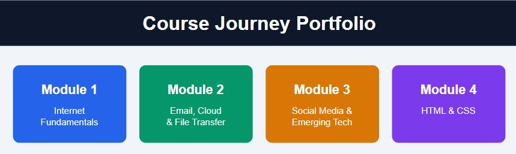
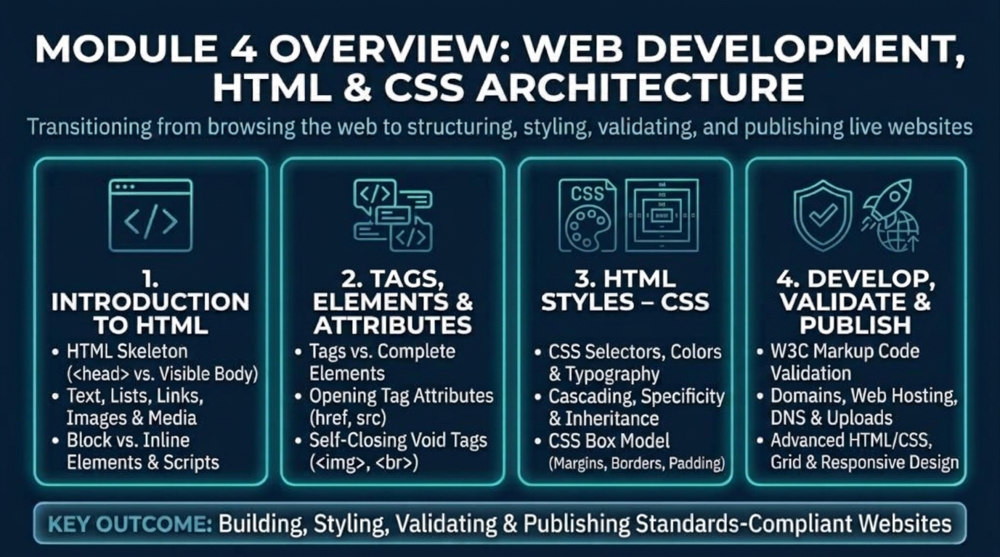
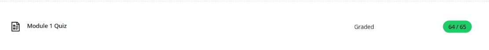
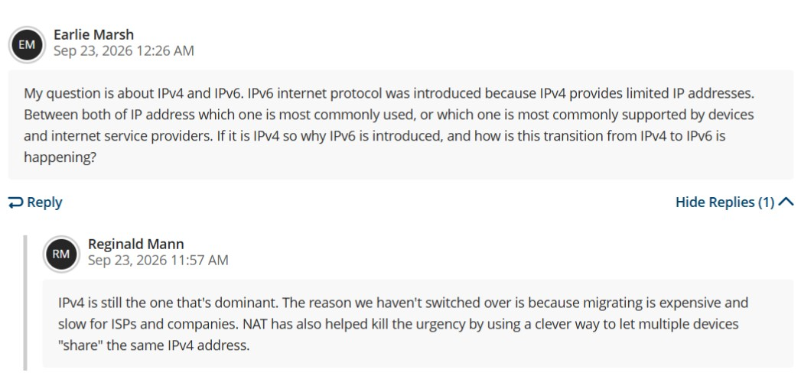
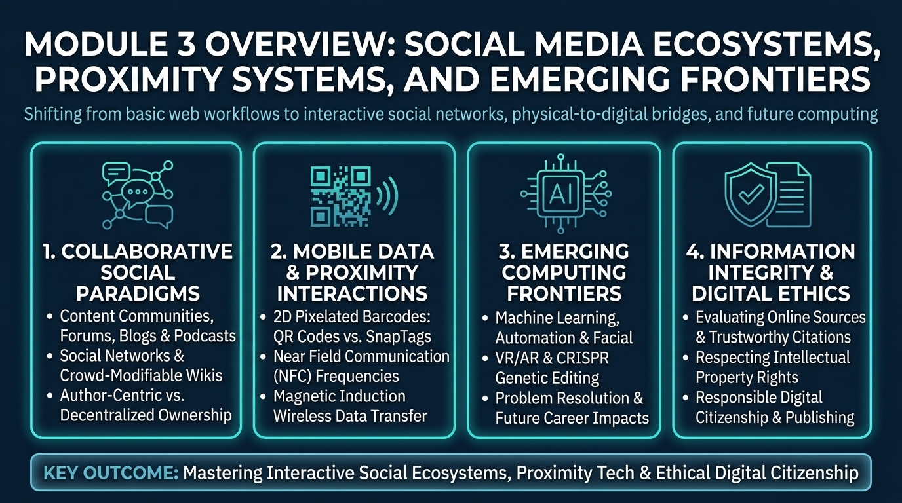
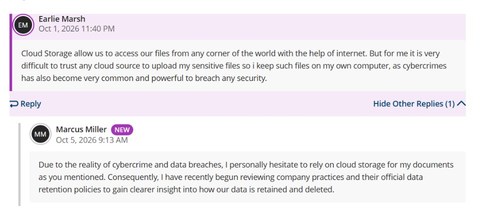
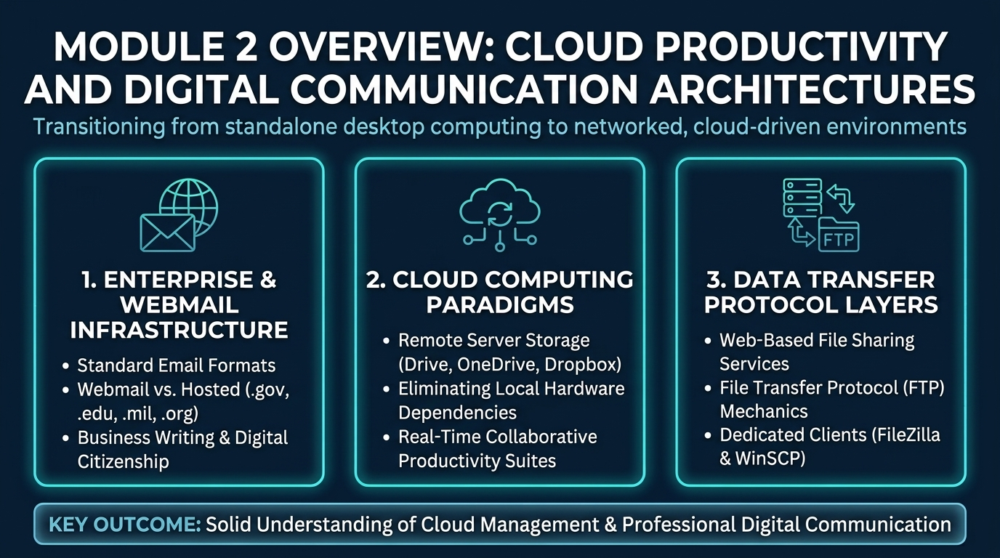
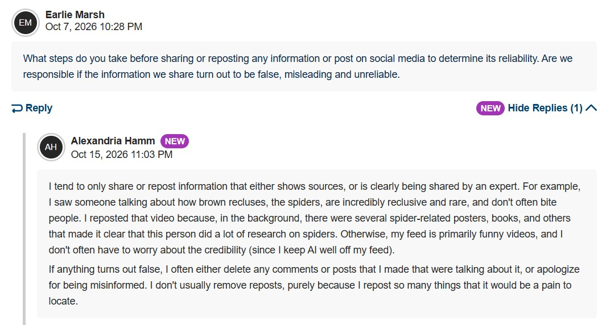
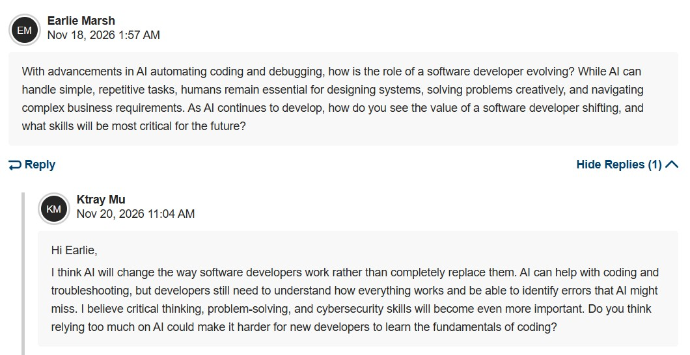

Coursework & Module Highlights
An in-depth look at the technical concepts I mastered throughout Modules 1-4.
Interactive Module Map
Click a module to jump to it.

Module 1: Internet Fundamentals
Welcome to the foundational segment of my portfolio journey. Module 1 serves as a deep dive into the core architecture, evolution, and operational frameworks that power modern digital communication. Rather than treating the internet as an invisible utility, this module challenged me to deconstruct the internet down to its physical and logical roots. Over the course of this module, I systematically analyzed everything from the military origins of decentralized networking to the hardware pipelines that deliver data to consumer devices.
The academic scope of this module was structured around three core pillars:
- Network Infrastructure & Protocols: Studying how the Advanced Research Projects Agency Network (ARPANET) transitioned from a crisis-resilient military project into the public civilian internet by 1995. This includes analyzing the technical differences between 32-bit IPv4 addressing and the modern 128-bit IPv6 framework, alongside the translation mechanics of the Domain Name System (DNS).
- Digital Access & Application Mechanics: Differentiating the physical components of the internet (fiber optics, coaxial cables, modems) from the application software layer known as the World Wide Web. I mapped out exactly how web browsers request, interpret, and compile remote server code into visual pages.
- Advanced Information Retrieval: Unpacking the algorithmic backend of search engines. I learned how automated spiders perpetually build a database index, and how algorithms use page ranking to guess relevancy. Moving past basic phrasing, I mastered advanced search query operators via the GovInfo portal and developed proactive strategies to optimize research workflow efficiency.
By mastering these digital frameworks, I have built the crucial computer literacy skills required to navigate, troubleshoot, and optimize web environments. The following subpages act as an extensive, interactive archive of my technical notes, external research applications, and collaborative peer interactions throughout this module.
Module 1 Artifacts & Collaboration

Module 1 Overview: Foundations of Global Digital Infrastructure — Network Protocols, Web Access & Search Retrieval.

My results from the Module 1 Assessment Quiz.

Screenshot of my peer mentorship in the Module 1 Discussion Forum.
Module 2: Email, Cloud & File Transfer
Welcome to the second major segment of my learning portfolio. Module 2 focuses on the transition from standalone desktop computing to networked, cloud-driven environments. During this module, I analyzed the systems that facilitate instant global collaboration, business transactions, and secure data migration. Rather than looking at email and cloud storage as basic consumer utilities, this module challenged me to investigate their underlying formats, organizational structures, and communications protocols.
The academic scope of this module covers three primary areas:
- Enterprise and Webmail Infrastructure: Breaking down standard email formats and analyzing the clear division between free web-based services and hosted enterprise systems utilizing specialized domain suffixes (such as .gov, .edu, .mil, and .org). I also studied how to write professional business emails and the principles of being a good digital citizen.
- Cloud Computing Paradigms: Examining the realities of cloud infrastructure, tracking how remote server storage networks (like Google Drive, OneDrive, and Dropbox) eliminate local hardware dependencies. This includes investigating real-time collaborative document streaming and online productivity suites.
- Data Transfer Protocol Layers: Mapping out the precise methods used to move information across the web. I compared consumer-grade, web-based file sharing services with the technical, network-level operations of the File Transfer Protocol (FTP) using dedicated software clients like FileZilla and WinSCP.
By studying these digital workflows, I have gained a solid understanding of cloud management and professional digital communication. The following subpages feature an interactive, comprehensive look at my technical notes, educational video integrations, and external learning resources.
The FTP Workflow
| Step 1: Authentication | The user launches the FTP Client, inputs the server's host address, and enters secure login credentials to establish a direct connection. |
| Step 2: Navigation | The client splits the screen, showing the local file directory on one side and the remote server's file layout on the other. |
| Step 3: Transfer Interchange | The user selects files and initiates an upload or download request. The client and server manage the data exchange. |
Module 2 Artifacts & Collaboration

Module 2 Overview: Cloud Productivity and Digital Communication Architectures — Webmail, Cloud Storage & FTP.
My results from the Module 2 Assessment Quiz.

Screenshot of my peer mentorship in the Module 2 Discussion Forum.
Module 3: Social Media & Emerging Tech
Welcome to the third core division of my course journey portfolio. Module 3 explores the shift from basic web workflows to highly interactive, collaborative social networks, modern physical-to-digital bridge technologies, and groundbreaking computing paradigms. Throughout this module, I analyzed how modern digital communication shapes consumer behavior, explored physical computing tags, evaluated future technological shifts, and studied the ethics of digital citizenship.
The academic structure of this final module centers on four vital pillars:
- Collaborative Social Paradigms: Categorizing digital media into distinct domains including content communities, forums, blogs, podcasts, social networks, and wikis. I analyzed ownership structures, contrasting the author-centric layout of blogs against the decentralized, crowd-modifiable architecture of wikis.
- Mobile Data & Proximity Interactions: Examining the mechanics of two-dimensional pixelated barcodes and near-field systems. I compared standard QR codes against enhanced SnapTags, and investigated the wireless frequencies of Near Field Communication (NFC) powered by magnetic induction.
- Emerging Computing Frontiers: Investigating the technological trends shaping our future society. I evaluated how fields like machine learning, facial recognition, automation, virtual/augmented reality, and CRISPR genetic editing operate, the problems they solve, and their future career impacts.
- Information Integrity & Digital Ethics: Studying the severe responsibility that comes with global publishing access. I focused on evaluating online sources, recognizing trustworthy citations, respecting intellectual property rights, and committing to responsible digital behavior.
The following subpages offer an in-depth archive of my analytical lecture notes, interactive multimedia elements, and educational resource integrations.
Social Media Typologies
| Platform Type | Examples | Primary Function |
|---|---|---|
| Content Communities | YouTube, Pinterest | Hosting and sharing rich media |
| Blogs | WordPress, Blogger | Author-centric publication |
| Forums | Quora, StackExchange | Chronological public discussions |
| Wikis | Wikipedia, WikiHow | Crowd-sourced knowledge |
Module 3 Artifacts & Collaboration

Module 3 Overview: Social Media Ecosystems, Proximity Systems, and Emerging Frontiers — Social Platforms, NFC & AI.
My results from the Module 3 Assessment Quiz.

Screenshot of my peer mentorship in the Module 3 Discussion Forum.
Module 4: HTML & CSS
4.1 Introduction to HTML
- Goal: Understand how webpages are structured and transition from browsing the web to creating for end-users.
- Core Skills: Building a basic HTML page skeleton (head metadata vs. visible content), formatting text, creating lists, and adding links, images, and interactive elements. Understanding block-level vs. inline elements and how JavaScript and stylesheets connect to a site layout.
4.2 Tags, Elements, and Attributes
- Goal: Master the building blocks of HTML syntax.
- Core Skills: Distinguishing between tags (the angle-bracket markers), elements (the opening tag, content, and closing tag together), and attributes (extra properties inside opening tags, such as href or src). Recognizing and properly using self-closing (void) tags (like <img> or <br>) that do not wrap around text.
4.3 HTML Styles – CSS
- Goal: Learn how to control the visual design, colors, typography, and layout of HTML pages using Cascading Style Sheets (CSS).
- Core Skills: Connecting CSS to HTML and writing rules using CSS selectors. Applying colors, text styling, and understanding cascading, specificity, and inheritance. Controlling page layout and spacing through the CSS Box Model (margins, borders, padding, and element sizing).
4.4 Develop, Validate, and Publish
- Goal: Ensure your code follows professional web standards and get your finished website live on the internet.
- Core Skills: Checking your markup for errors using the W3C Validator. Understanding how domains, web hosting, DNS, and file uploads work to publish a site online.
Multimedia: HTML Basics
Here is a great video explaining the basics of HTML that I used for this module:
Module 4 Artifacts & Collaboration
Module 4 Overview: Web Development, HTML & CSS Architecture — Structure, Styling, Validation & Publishing.
My results from the Module 4 Assessment Quiz.

Screenshot of my peer mentorship in the Module 4 Discussion Forum.